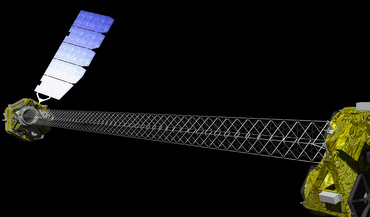
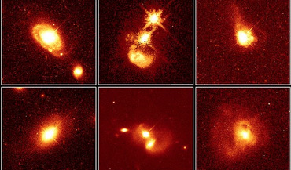
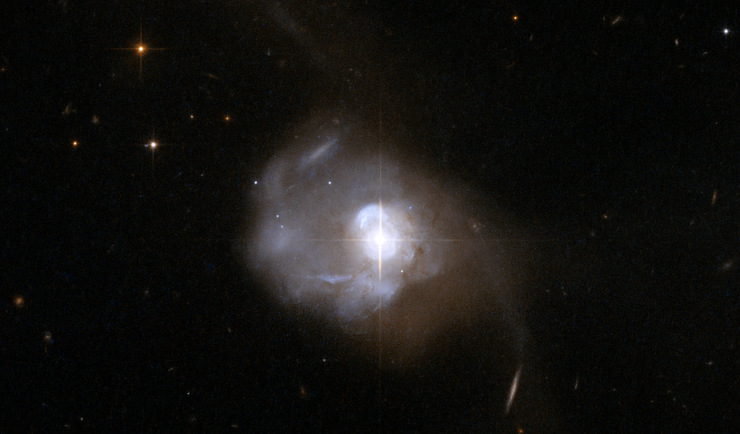
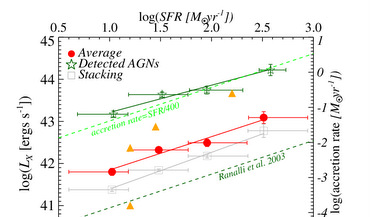

Hi, I'm an astrophysicist who studies supermassive
black holes and their connection to galaxy evolution.
I am currently a postdoc working with Professor Niel Brandt
in the Department of Astronomy and Astrophysics at the Pennsylvania State University.
I am also a member of the extragalactic survey and obscured AGN science groups of the recently
launched NuSTAR space telescope.
Before coming to the PSU, I got my PhD in Physics from Dartmouth College supervised by Professor Ryan Hickox.
I recevied my B.S. and M.S. in Physics and Astronomy from National Tsing Hua University in Taiwan.
Broadly speaking, I am interested in black holes. As an observational astrophysicist,
I study the connection between supermassive black holes and galaxy evolution using observations of
active galactic nuclei (AGN) and star-forming galaxies from space telescopes such as NuSTAR, Chandra, XMM-Newton, Swift, Spitzer, Herschel, and WISE.
I also use data from ground-based observations in the optical, near-IR, and radio wavelengths.
Recent Work
Here's the brief summary of the past and present projects that I worked on as the lead author. I am also a co-author for
8 other peer-reviewed papers.

AGN in dwarf galaxies as seen by NuSTAR
I've been using NuSTAR serendipitous survey data to search for hard X-ray photons from dwarf galaxies.
With NuSTAR's superb sensitivty of probing high energy X-ray photons, we can see emission from accreting black holes even if
they are heavily obscured. This will provide a more complete picture of the AGN population in dwarf galaxies, and better constrain the boundary condition for different primordial black seeding scenarios. This work is in preparation.

Mid-IR and X-ray emission from powerful AGNs
To explore the nature of supermassive black hole accretion rate indicators in quasars,
I have compiled several quasar catalogs and confirmed that on average,
the AGN X-ray to mid-IR luminosity ratio is indeed lower than the local relation if we take the X-ray flux limits into account.
This is essential in the studies of AGN and galaxy coevolution since the choice of SMBH accretion rate indicators
can actually alter the interpretation of the results. (To be submitted)

The connection between AGN obscuration and star formation in powerful quasars
A simple explanation of the close correlation between black hole accretion and star formation is that they are both fueled by the same gas reservoir.
By studying quasars (the most luminous AGN) based on the presence of hot dust heated by black holes,
we find a direct connection between star formation and quasar obscuration.
Since the most rapid growth of galaxy and SMBH happens at this dust-enshrouded phase,
it is important to include these heavily obscured AGN population when search for evidence of the AGN-galaxy coevolution.
(See the article here.)

The correlation between star formation and black hole accretion in star-forming galaxies
Ever since the discovery of the tight correlation between the galaxy bulge mass and the SMBH mass for nearly every massive galaxies,
a large number of studies have been trying to look for the underlying physical mechanisms that drive this correlation.
Previous studies have primarily focused on AGNs where the supermassive black holes are actively growing.
However, considering the more rapid variability of black hole accretion rate than galactc star formation rate,
we found that when focusing on the star-forming galaxies (not necessarily an AGN),
their average SMBH accretion rate is strongly correlated to the star formatino rate.
The published article could be found here.
A short summary of this paper could also be found at SciTech Daily.
Get In Touch
Feel free to contact me if you have any questions about my research.
-
Address
525 Davey Lab, Department of Astronomy and Astrophysics
Pennsylvania State University
University Park, PA 16801
United States
-
Phone
814-863-5505
-
Email
ctchen at psu dot edu
{kind=link}
{kind=link}
{kind=link}
{kind=link}